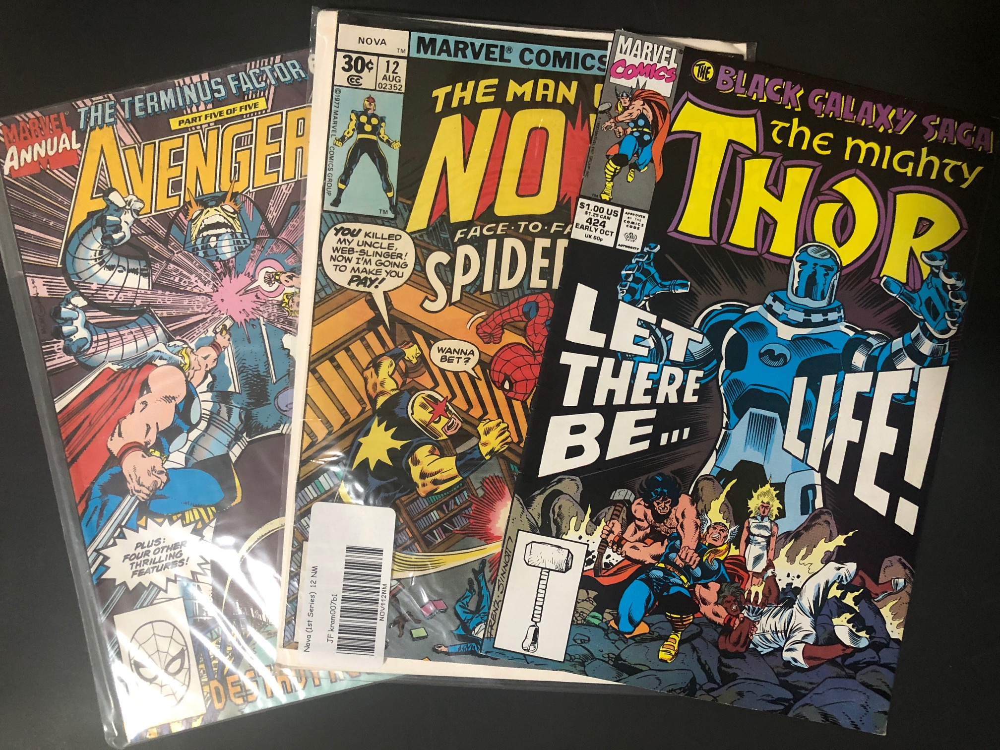
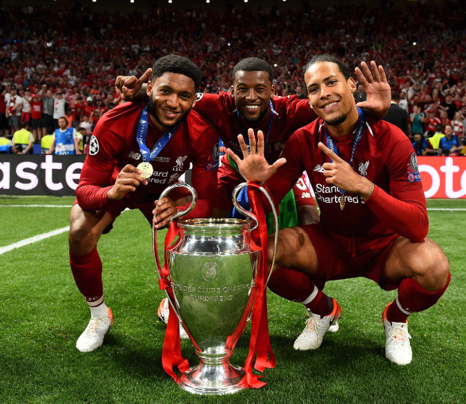

Les Sneakers :
Depuis maintenant 2 ans, je collectionne les paires de chaussures et je me passionne pour la mode. La sneakers est un grand univers qui cache un marché d'une grande ampleur.
Marvel :
Depuis tout petit je suis un grand fan des super-héros Marvel. Leurs histoires me font rêver et m'inspirent tous les jours. J'aimerai un jour moi même créer un personnage qui aura la possibilité de vivre des aventures et croiser les super-héros qui ont bercé mon enfance.
Le football :
j'ai découvert le football professionnel à mes 11 ans lors de la coupe du monde 2014 au Brésil. Depuis ce jour je supporte fièrement les couleurs du blason du FC Nantes. J'aime ce sport car ce ne sont pas de simples matchs mais bien une compétiton qui ne s'arrête jamais. Pour gagner des trophés de club ou individuels, les joueurs ne cessent de se surpasser et cela rend ce sport magnifique.
